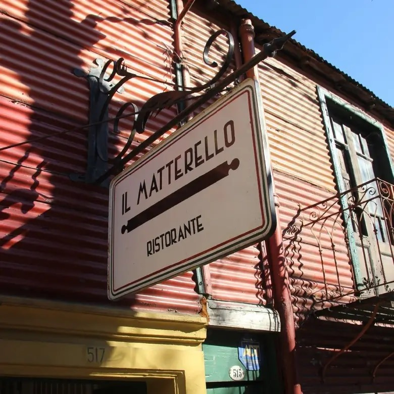

¡Pasión por la cocina italiana!
Escencia artesanal
Descubre nuestros sabores auténticos. Ingredientes artesanales traidos de italiana por esclavos bolivianos.

Sabor tradicional
La cocina italiana es la mejor del mundo y tiene milenios de historia. Te invitamos a probar las recetas mas tradicionales de nuestra amada tierra.
Ingredientes frescos
La materia prima utilizada por nuestros chefs es traida de Europa en un coehete que va a la estratósfera y luego aterriza en la base aerea de Tandil.